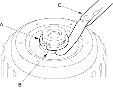
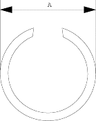
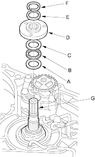

- Install the 25.5 mm cotters to the cotter groove on the driven pulley shaft, theNmeasure the clearance between the cotters (A) and the start clutch guide (B) with a feeler gauge (C).
NOTE: Take measurements in at least three places and use the average as the actual clearance.
STANDARD: 0-0.13 mm (0-0.005 in.)

- If the clearance is out of standard, remove the cotters and measure their thickness.
- Select and install the new 25.5 mm cotters, then recheck.
COTTERS, 25.5 mm
No. Part Number Thickness A 90429-P4V-000 2.9 mm (0.114 in.) B 90430-P4V-000 3.0 mm (0.118 in.) C 90431-P4V-000 3.1 mm (0.122 in.) D 90432-P4V-000 3.2 mm (0.126 in.) - After replacing the cotters, make sure that the clearance is within the tolerance.
- Install the cotter retainer and snap ring.
- Verify that the snap ring outside diameter (A) is 33.9 mm (1.33 in.) or less.

- Install the thrust washer (A), thrust needle bearing (B), thrust washer (C), ATF pump drive sprocket hub (D), 22 x 28 mm thrust shim (E) and snap ring (F) on the input shaft (G).
